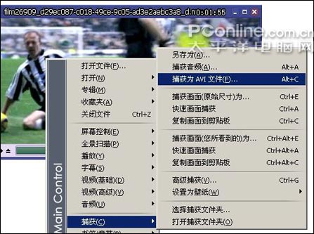

2008年08月03日 星期日 11:48 A.M.
八款万能播放器的比较
八款万能播放器横向评测
一、安装程序和安装后空间占用比较
从安装程序大小上看，有四款软件安装包都在20 MB左右；绚彩魅影的安装程序较大，将近30MB；而GOM Player、VLC和Mplayer都控制在10 MB以内。下面我们以柱状图很直观地将这八款万能播放器的安装程序大小进行
<strong class="kgb" onmouseover="isShowAds = false;isShowAds2 = false;isShowGg = true;InTextAds_GgLayer="_u5BF9_u6BD4";KeyGate_ads.ShowGgAds(this,"_u5BF9_u6BD4",event)" style="border-right: 0px; padding-right: 0px; border-top: 0px; padding-left: 0px; font-weight: normal; padding-bottom: 0px; margin: 0px; border-left: 0px; cursor: hand; color: #0000ff; padding-top: 0px; border-bottom: 0px; text-decoration: underline" onclick="javascript:window.open("http://pagead2.googlesyndication.com/pagead/iclk?sa=l&ai=Bk3ouRiiVSI2oDIzY6wODmdmwDIKctkailIa1A8CNtwHAuAIQARgBIKy8kQooFDgAUP_viJL5_____wFgncHegdgFsgEMYmJzLmh6LXpqLmNuyAEB2gEraHR0cDovL2Jicy5oei16ai5jbi92aWV3dGhyZWFkLnBocD90aWQ9MjIyNKkC6HMTg1qfgz7IAuqG2gSoAwHoA8EE6AMfiAQBkAQBmAQA&num=1&adurl=http://www.szleadtech.com.cn/NewPro.asp&client=ca-pub-1681215984289622");GgKwClickStat("对比","www.szleadtech.com.cn","afc","2000072192");" onmouseout="isShowGg = false;InTextAds_GgLayer="_u5BF9_u6BD4"">对比
（如图1，单位：MB）。
http://www.pconline.com.cn/pcedu/pingce/0604/pic/45player_1.jpg
【图1 安装包大小比较】
下面，我们接着对安装后的硬盘空间占用情况进行对比（安装时组件选择都选择默认的标准安装方式）。
http://www.pconline.com.cn/pcedu/pingce/0604/pic/45player_2.jpg
【图2 安装后硬盘空间占用比较】
空间占用多是否就代表它所支持的格式多、功能强大呢？而小巧的播放器是否也意味其功能的缩水呢？我们接着看下面的评测。
二、视频格式支持及播放效果测试
所谓“万能播放器”，当然对于各种主流的视频文件都必须能够流畅的播放，而对一些非主流的视频格式也必须较好的支持。下面我们就用几种主流的视频格式（avi、rmvb、mpeg、mov以及光盘媒体文件）对这八款“全能播放器”基本的视频格式支持进行测试。
同时以几种较少见的非主流视频格式格式进行测试，检验一下它们是否真的名副其实。同时，我们还将在播放
<strong class="kgb" onmouseover="isShowAds = false;isShowAds2 = false;isShowGg = true;InTextAds_GgLayer="_u753B_u9762";KeyGate_ads.ShowGgAds(this,"_u753B_u9762",event)" style="border-right: 0px; padding-right: 0px; border-top: 0px; padding-left: 0px; font-weight: normal; padding-bottom: 0px; margin: 0px; border-left: 0px; cursor: hand; color: #0000ff; padding-top: 0px; border-bottom: 0px; text-decoration: underline" onclick="javascript:window.open("http://pagead2.googlesyndication.com/pagead/iclk?sa=l&ai=Bi9VjRiiVSI2oDIzY6wODmdmwDMne2FrRkYbMBMCNtwHQhgMQAhgCIKy8kQooFDgAUPKKkoD7_____wFgncHegdgFsgEMYmJzLmh6LXpqLmNuyAEB2gEraHR0cDovL2Jicy5oei16ai5jbi92aWV3dGhyZWFkLnBocD90aWQ9MjIyNIACAakC6HMTg1qfgz7IApOl1gSoAwHoA8EE6AMfiAQBkAQBmAQA&num=2&adurl=http://www.gzyaco.com&client=ca-pub-1681215984289622");GgKwClickStat("画面","www.gzyaco.com","afc","2000072192");" onmouseout="isShowGg = false;InTextAds_GgLayer="_u753B_u9762"">画面
效果方面对它们进行测评。
1、KMPlayer
Kmplayer号称几乎可以播放系统上所有的影音文件。笔者用Kmplayer播放avi、rmvb、mpeg 1/2/4格式的视频文件以及光盘文件dat等，均可以流畅播放，可见其对各种主流视频文件类型有着很好的支持。而在其“打开”对话框中也可以看到其可支持的视频文件。我们用其他非主流视频格式进行测试，发现KMPlayer无法支持csf格式的文件，而其他文件支持良好。
【图3 也有不支持的格式】
Kmplayer进行视频播放时，其画面效果很不错。我们使用它播放高清晰的rmvb格式视频，画质良好（如图4）；播放其他一些主流格式视频，画面质量都与该视频格式的官方播放器播放效果没有什么明显差别。
http://www.pconline.com.cn/pcedu/pingce/0604/pic/45player_4.jpg
【图4 Kmplayer的播放画面截图】
3、GOM Player
GOM Player无法播放mov格式视频和SWF格式动画，其他视频文件支持的测试结果同上面两款软件一样。另外需要指出的是，笔者在用其对MPEG－4格式的视频进行测试时，正常播放一分钟左右后出现非法操作的问题，反复测试几次都是如此。
http://www.pconline.com.cn/pcedu/pingce/0604/pic/45player_6.jpg
【图6 参数设置向导】
GOM Player的播放画面截图如下（如图7），和其他几款软件没有很大差别，效果上完全没有问题。
不过仔细观察，可以发现GOM Player在细节方面的表现比其他几款软件更加出色，并且GOM Player的播放流畅性最好，即使在系统资源剩余较少情况下，任意拖动进度调，它都可以非常快的找到位置开始播放，并且依旧非常流畅，不会出现其他一些播放器的影音不同步或者卡屏的现象。
http://www.pconline.com.cn/pcedu/pingce/0604/pic/45player_7.jpg
【图7 GOM Player的播放画面截图】
4、超级兔子快乐影音
兔子影音对各种视频支持情况很好，常见格式都可以很好支持，测试中没有出现问题。播放画面的质量也不错（如图8）。
http://www.pconline.com.cn/pcedu/pingce/0604/pic/45player_8.jpg
【图8 超级兔子快乐影音播放画面截图】
5、VLC (VideoLAN)
在对VLC进行测试时出现了一些问题：MPEG-1/2/4、AVI、wmv格式的视频都可以正常播放，但是播放RM、RMVB格式时出现有声音无画面的现象；无法播放SWF动画。
至于播放画面质量，因为其他软件截取的画面源自RMVB视频，而VLC不能正常播放RMVB格式，所以也就无法截取与其他软件相同的画面进行对比。以下截取了其他视频的画面作参考（如图9）。
http://www.pconline.com.cn/pcedu/pingce/0604/pic/45player_9.jpg
【图9 VLC的播放画面截图】
6、Mplayer
Mplayer的视频播放画面非常的简单，但是除了SWF动画外，它在测试中对各种视频格式支持都非常不错。播放画面的质量也不错（如图10），并且在测试中我们发现同样的一段视频，在系统剩余资源较少的情况下，用Mplayer播放可以获得比除了GOM Player外其他六款播放器播放更为流畅的效果。不过从视频观赏的方便性来说，Mplayer的视频播放控制基本都是使用快捷键的，所以对不熟悉的用户来说上手有点麻烦。
http://www.pconline.com.cn/pcedu/pingce/0604/pic/45player_10.jpg
【图10 Mplayer的播放画面截图】
7、暴风影音和My MPC
暴风影音、My MPC和兔子影音非常类似，其对各种视频支持情况也很好，这也是基于MPC播放器的共性了。它们的播放画面质量也没有什么问题
【图11 暴风影音的播放画面截图】
小结：综上所述，其他八款播放器中大部分对各种主流视频格式的文件都能够流畅播放，而一些非主流但是比较常见的视频格式基本也能够较好的支持。
但是它们中也存在一些问题：比如许多网友询问关于CSF格式视频播放的问题，在测试中这八款播放器无一例外的不支持CSF格式的视频文件；个别播放器对一些视频格式支持不好：
VLC的问题比较严重，RMVB格式无法正常播放，而网络上许多视频都是该格式的；还有GOM Player无法播放MOV视频和SWF动画；Mplayer无法播放SWF动画。
对于不能播放CSF格式视频的问题，据我们了解，CSF是一种应用于远程教育的视频格式，严格来说这不是一种格式而是一种多视/
<strong class="kgb" onmouseover="isShowAds = false;isShowAds2 = false;isShowGg = true;InTextAds_GgLayer="_u97F3_u9891";KeyGate_ads.ShowGgAds(this,"_u97F3_u9891",event)" style="border-right: 0px; padding-right: 0px; border-top: 0px; padding-left: 0px; font-weight: normal; padding-bottom: 0px; margin: 0px; border-left: 0px; cursor: hand; color: #0000ff; padding-top: 0px; border-bottom: 0px; text-decoration: underline" onclick="javascript:window.open("http://pagead2.googlesyndication.com/pagead/iclk?sa=l&ai=B8RzZRiiVSI2oDIzY6wODmdmwDJa9jEuWjtrfCcCNtwHgxQgQBhgGIKy8kQooFDgAUKfVver7_____wFgncHegdgFsgEMYmJzLmh6LXpqLmNuyAEB2gEraHR0cDovL2Jicy5oei16ai5jbi92aWV3dGhyZWFkLnBocD90aWQ9MjIyNKkC6HMTg1qfgz7IAorXpASoAwHoA8EE6AMfiAQBkAQBmAQA&num=6&adurl=http://www.achieva.com.cn/index.asp&client=ca-pub-1681215984289622");GgKwClickStat("音频","www.achieva.com.cn/","afc","2000072192");" onmouseout="isShowGg = false;InTextAds_GgLayer="_u97F3_u9891"">音频
格式的“封装”，所以播放它需要其所包含媒体格式的解码器和相应的分离器，播放器也同时需要支持其“流”协议。
基于以上原因，此次测试中CSF格式的支持只作为考量因素，不作为评测标准。除了测试中出现问题的三款播放器，其他五款播放器对于“万能”的称号都可以说是无愧的。以下是各播放器对视频格式支持情况的总结（如图13）。
http://www.pconline.com.cn/pcedu/pingce/0604/pic/45player_13.jpg
【图13 对视频格式的支持】
几款播放器对于所能正常播放的RMVB视频，其播放画面都能够较好的渲染，和使用RealPlayer官方播放器播放的效果没有什么差别，网友们可以把它们的截图与以下RealPlayer播放器的截图进行对比。
http://www.pconline.com.cn/pcedu/pingce/0604/pic/45player_14.jpg
【图14 Realplayer播放器画面截图】
三、音频格式支持测试
音频播放对于这些以播放视频为主要功能的播放器来说，只能算作是其“副业”，但是既然叫做“万能播放器”，它们对各种音频文件也应该能够正常播放。这八款播放器对主流的音频格式支持如何呢？下面是测试总结：
http://www.pconline.com.cn/pcedu/pingce/0604/pic/45player_15.jpg
【图15 对音频格式的支持】
在音频格式上都支持通用的MP3、WMA、CD、RM、ASF，但是AAC格式绚彩魅影和GOM Player不支持。另外，在测试中我们也遇到这样一个问题：八款播放器都可以支持大部分的RAM格式音频，但是在对某两个RAM音频文件样本进行测试时发现，仅有兔子影音、MPlayer、暴风影音和My MPC可以播放。
四、特色功能比较
1、KMPlayer
KMPlayer不仅支持的视频、音频的非常丰富，在其他功能上也尤其的强大，具有非常多人性化的特色。特别是对于喜欢看电视剧的朋友来说，KMPlayer是最适合不过的了：它可以自动无缝播放多集连续剧、自动跳过连续剧的片头片尾（如图16）；
http://www.pconline.com.cn/pcedu/pingce/0604/pic/45player_16.jpg
【图16 自动跳过片头片尾】
如果看电影和电视剧没有看完，还可以让它记住播放位置，下一次就可以“断点续看”；播放影音不同步的RMVB文件可以手动同步。
KMPlayer还有最为强大的捕获功能，可以从你播放的视频、音频中截取出画面、视频片断、音频片断等，其多样的捕获格式和参数设置是其他万能播放器所不具备的（如图17）。在其他方面，KMPlayer还有极其丰富的功能，比如对视频、音频的控制调节方面，它的功能也是尤为强大。

http://www.pconline.com.cn/pcedu/pingce/0604/pic/45player_17.jpg
【图17 捕获方面较为强大】
2、绚彩魅影
绚彩魅影的没有什么特色功能，只提供了常见的屏幕长宽比调节和色彩、音频控制等功能。
3、GOM Player
GOM Player拥有精致的界面，它可以支持播放下载中断的文件，索引损伤的视频AVI文件的播放，这一点在测试中也得到证明：对于同样下载未完成的文件，GOM Player可正常播放的时间比其他几款播放器更长一些。
它也可以截取的视频画面储存为图像文件，还可以通过连续截图功能来以帧为单位，把影片的场景截取成连续性的场景（如图18）。同时，它还拥有在视频文件中仅提取音频文件或是反复听取特定区间的功能（如图19）。
http://www.pconline.com.cn/pcedu/pingce/0604/pic/45player_18.jpg
【图18 可进行截图】
http://www.pconline.com.cn/pcedu/pingce/0604/pic/45player_19.jpg
【图19 播放功能可设置循环】
GOM Player最大的特色其实就是它播放视频的流畅程度，比其他七款播放器表现的都更好。
4、超级兔子快乐影音
超级兔子快乐影音播放器提供了一个桌面播放功能（如图20），可以让你的电影（限MPEG编码）在桌面图标下面播放，把视频当成你的桌面，帮你打造一个有声有色的动态桌面。
http://www.pconline.com.cn/pcedu/pingce/0604/pic/45player_20.jpg
【图20 桌面播放功能】
VLC最具特色的功能是可以边下载边观看Divx媒体文件，如果觉得不好看或者画面不清晰，就可以停止下载，避免浪费时间；它还可以播放下载不完全的AVI文件。
6、Mplayer
Mplayer最大的特色就在于它的简单小巧，其对内存的占用较少，让你在低配置电脑下也能流畅播放DVDrip视频。并且它本身编译自带了多种类型的解码器，不需要像其他几款播放器一样要安装xvid、ffdshow、 ac3 filter、ogg、vobsub等等所谓看DVDrip必备解码器，因此不会跟你的电脑原来所安装的解码器有任何冲突。
7、暴风影音和My MPC
两款非常相像的播放器，和超级兔子快乐影音一样同样源自Gabest制作的Media Player Classic，除了可以播放众多的影音格式，它们其他方面并没有什么特色。不过，其实这也是它们的特色——不注重功能，“全能”最重要。这两款播放器和超级兔子快乐影音也是这次评测中支持所有主流常见格式的播放器。
五、系统资源占用
在资源占用上，我们分空闲、播放视频文件和播放音频文件三种情况进行测试。八款播放器表现不一，其测试数据对比柱状图如下（单位：KB）：
http://www.pconline.com.cn/pcedu/pingce/0604/pic/45player_21.jpg
【图21 空闲时的内存占用对比】
http://www.pconline.com.cn/pcedu/pingce/0604/pic/45player_22.jpg
【图22 播放视频文件时的内存占用对比】
http://www.pconline.com.cn/pcedu/pingce/0604/pic/45player_23.jpg
【图23 播放音频文件时的内存占用对比】
Mplayer因为必须选择播放文件后软件界面才能启动，故上面没有其空闲时的系统资源占用数据。内存占用和CPU使用率数据汇总如下（单位：KB）：
http://www.pconline.com.cn/pcedu/pingce/0604/pic/45player_24.jpg
【图24 CPU和内存使用汇总】
KMPlayer虽然功能丰富，但是其反映到CPU的使用率和内存的使用都比较低，特别是内存占用上控制得很好，不过其在音频播放上CPU使用率的处理欠佳；
绚彩魅影在内存占用上处理的不好，是八款软件中占用较多的；VLC在视频播放时对系统资源的占用比较严重；
Mplayer是总体上对系统资源占用最少的，特别是其播放视频时的内存占用处理非常出色，这主要益于其简单的界面与功能和它特有的解码器；其他四款软件对系统资源的占用大致处于平均水平，没有什么特别的表现。